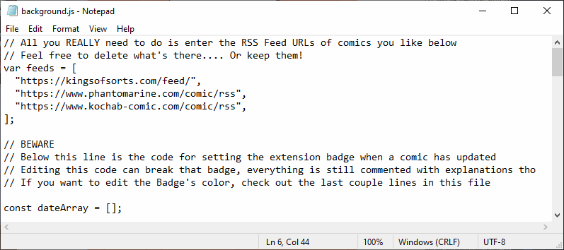

What is this?
What's Webcomic Day?
Webcomic Day is hosted by the Screen Tones podcast and aims to celebrate all things webcomic-related! From fans to creators- it's a day for everyone to celebrate, share, and talk about webcomics!
You can learn more about it by visiting the Webcomic Day website or check out the #webcomicday hashtag on your favorite social media.
To me, the artistic and creative spirit that goes into webcomics is just as important as the DIY aspect of it- lots of people have story ideas and very few people feel they can tell those stories themselves. (Not that webcomics are easy to make or an effortless endeavor- but like all DIY projects, they reward those who are willing to try!)
What the humble RSS feed can do for You
As social media sites become more fraught, following your favorite creators has become more difficult. If someone posts a page off schedule, or needs to take a hiatus, that information can be lost among ads and bad algorithms.
That's where RSS Feeds come in! (If you want to know more,
RSS.com has a great explanatory article
.) A lot of webcomics you follow probably have their own RSS feeds
already- just look for the
 icon. Using the RSS Feed Link, you can follow and be alerted to new
pages from your favorite webcomic creators. (Or, if you follow
authors, they often also have RSS feeds built into their blogs and
websites.)
icon. Using the RSS Feed Link, you can follow and be alerted to new
pages from your favorite webcomic creators. (Or, if you follow
authors, they often also have RSS feeds built into their blogs and
websites.)
CIY (Code It Yourself)
There’s lots of pre-built browser extensions that allow you to track RSS Feeds- but in the spirit of DIY and Webcomic Day- here is a RSS Feed Reader Extension you can download and edit and chop up to your heart’s content!
Did you know a browser extension really only uses HTML and CSS (especially after I’ve done all the JavaScript coding work)? So even someone with very limited coding knowledge can customize their own extension.
You can hop right down to the code to download and start messing around- or you can read the section below for an introduction to coding.
But, I Don't Know Anything About Coding!
That’s okay! I’ve made the code extremely painless, once you download the files, you’ll only need to take a couple of steps to customize and add the extension to your browser. I’ve written comments in the code so it’s super clear what you (someone with little coding experience) can edit, and also I’ve written what you shouldn’t touch. If you break something, you can always re-download the file and start from a working extension again.
Coding and the Web
The browser extension uses HTML (creates content and structure), CSS (styles the content with colors and more), and JavaScript (lets the user interact with the content). Coincidentally, these 3 coding languages are also the building blocks of (almost) all websites you use, which means you only need to learn the basics of web development to understand how to edit this RSS Feed Reader (and make your own website, if you want).
There is only 1 specific place you have to edit the JavaScript, and it’s explained in detail below. The rest of the customization can be done solely with HTML and CSS (and is 100% optional). The place where you need to edit the code is explicitly pointed out, and I go into depth explaining that in the download section too.
Your computer probably has a built-in Text Editor (like Notepad on Windows computers), and you can use that for the most basic customization (adding webcomics you want to follow). If you’re interested in customizing the extension’s appearance, then I’d recommend downloading a Text Editor specific for coding. I’ve included some tutorials below that explain the basics of HTML and CSS- the tutorials will also give you advice on which text editor is right for you. (I use VS Code, but that's mainly because I use it for work.)
Basic Web Tutorials
- HTML Dog
- W3Schools
- Mozilla Tutorial (This is the most techincal looking one, so if you're brand new to coding, I'd recommend starting with one of the others.)
Anatomy of an Extension
Before we start, there’s some basic vocabulary and architecture we should go over. First, let’s look at what you’ll see when the extension is working. Then, we’ll go over the files you’ll see in the ZIP folder, and which ones you should keep an eye on if you want to edit your extension.
If you want more detailed information about what each file does, you can click on the ‘README.md’ file and learn more! Or read about it on the Github page (which is linked in the ‘Download’ section of this site.)
What the Extension Will Look Like
Folder Structure of the Extension
Files Of Interest
-
The img folder has the icon that appears in your browser, the icon itself is called icon48.png and comes from Icons8 (which is a great resource, if you want a different icon). The icon itself is 48 x 48 pixels. Technically, it's good practice to have multiple sizes of your icon, but since this is just something we're doing for fun, it's only got one size.
If you want the icon in your Bookmarks Toolbar to look different, choose a different 48 x 48 picture and save it to the img folder as ‘icon48.png’.
-
background.js runs in the background and creates a badge if a comic updates today. This is where you'll add the RSS Feed links of comics you want to follow - this is the only file you have to edit to customize your extension. This is also where you set what the badge's color and contents, if you want to change that.
-
style.css is what styles your popup- this is where you get to change the color, the font, the size of the font, et cetera. I've left comments outlining what everything does. Don't be afraid to experiment! If you really mess something up, you can just start back over from the original styling.
That's it! See, there really isn't too much to customize, and even less if you just want to add your own favorite comics.
Wait, I'm Stil Confused About RSS Feeds!
RSS stands for Really Simply Syndication (or Rich Site Summary) and has been around since the 1990s. RSS is less popular now than it was in the past, but since it’s an older technology, a lot of websites have an RSS feed built into them automatically.
An RSS feed is a simple text file written in a coding language called XML. When you have a website with an RSS Feed, any changes to your website are reflected in the RSS file immediately. An RSS Feed by itself is just code and can look really intimidating. Even if you’re familiar with code, it still isn’t the easiest thing to read. An RSS Feed Reader takes the code and turns it into something that’s easier to read.
With social media and email on the rise, RSS Feeds became less popular. When I was in high school, I used an RSS Feed to keep track of when manga I read updated (and when sites I liked to visit, like Cracked, published new articles). Now, I think most people rely solely on social media and email newsletters to see when their favorite websites update.
RSS feeds are unique because there’s no middle-man. There’s no email server to set up or social media presence to manage for the website owner, and on your end, you won’t find a newsletter in your spam or miss a Tweet because it got “low engagement.” When the website updates, the RSS updates, and your Feed Reader updates. That’s it.
My Soapbox
Maybe this is unrelated, but I truly feel like most technology is actually a lot more accessible than people realize. Even if the thought of coding something is intimidating, I still encourage you to check out the steps to editing and setting up the extension, and see what would go into editing the browser extension. There are a lot of great resources for learning to code and it’s honestly like any other hobby. You don’t have to be “good” to have fun and make stuff for yourself and your friends. (Just like webcomics!)
Your RSS Feed Reader
Download
You can download the extension here!
Click the green 'Code' button and click 'Download ZIP.' Once the zip file is downloaded, you can unzip it and begin editing!
If you're worried about downloading something online, the extension is hosted on Github, so all the files you download are visible on Github before putting them on your computer. Feel free to click through and see what each file has in it before downloading.
I only tested the extension on Firefox and Chrome, so the extension may not work as intended on other browsers. If you use another browser like Safari or Opera, you can google and follow steps to add your own extension. Let me know how it works!
Editing and Installation Instructions
-
Find the 'background' folder and select the JavaScript file based on the browser you use. So if you use Firefox, select Firefox.js. Right click that file, then click ‘Open with’ and select your Text Editor of choice. All images below show the code as viewed in Notepad. It should look like this:
 -
Go to your favorite webcomic, find their RSS Feed, and copy the URL in the browser. Once you click on the link, the page will look like a block of text. That’s okay, that’s the RSS Feed! The code in this extension takes that big block of code, and turns it into something that’s easier to read.
-
Paste the URL into the list (you can delete the links that are already there). Make sure to put quotation marks around the link, and to place a comma at the end as well. Like this:
"link", -
Click save! You’ve officially customized your own RSS Feed reader!
-
If you use Chrome this extension was built with Mozilla Firefox in mind. So you still have two more things to do before you can use the extension. It's just two simple changes, and all you do is change the word 'mozilla' to 'chrome'.
-
In the manifest.json file, change line 9 so that it reads
"scripts": ["background/chrome.js"], -
In the rss.html file, change line 13 so that it says
src="background/chrome.js"
-
-
You need to now "package" your extension- which is a fancy way of saying you need to put some files into a ZIP folder so the browser can read the extension correctly.
Compress the following files:
- the background folder
- the img folder
- manifest.json
- rss.html
- script.js
- style.css
(You want to compress everything but the License, the README, and a .git folder if you have one.)
If you have a Windows computer, select those files, right click and select Send to > Compressed (zipped) folder.
If you have a Mac, you'll select Compress 6 items. -
Installing your extension has different steps depending on the browser you use, but it's fairly simple to do in both Firefox and Chrome. The steps below are for Firefox, and the aside below is for Chrome.
-
If you use Chrome as long as you made the edits I specified in step 4, go to chrome://extensions/ and drag the ZIP folder onto the page. It should load automatically from there.
-
If you're a Chromer user you will see 2 errors upon uploading your application. These errors will not affect the app's functionality, and are around 1. the app being built for Firefox and 2. the Manifest version I used for the json file.
-
-
In Firefox, go to about:config in your browser and click 'Accept the Risk.' This will bring you to a page where you can edit some important things for your browser. Only edit what I mention, and be careful messing around here too much.
-
Search for xpinstall.signatures.required in the search bar, and double click to make the preference 'false'.
-
Click on the Menu button next to your Bookmarks Toolbar and then select ‘Extensions & Themes’ or press CTRL + Shift + A
-
Click the Gear Icon the the right of ‘Manage Your Extensions’ and click ‘Install Add-on from file…’ from the menu. Then select the ZIP folder you previously made.
-
You’re done! You can pin the extension to your Toolbar, and get notifications whenever a webcomic you like updates.
Making Your First Edit
Installing Your Extension
Steps 7 and 8 may get removed if Mozilla signs my extension before Webcomics day
It's that easy!
You know have your very own, customized, RSS Feed Reader.
Updating Your RSS Feed Reader
Well, you've done it! But maybe, you want the extension to be green and the icon to be a big star instead of a painting. Or maybe you want to add a new podcast to your reader. (Did you know podcasts also have RSS feeds you can track?) Well, open up the code and make those changes! If you want to see the changes you make in real time, follow the steps below in 'Seeing Your Edits.'
For those who are less code savvy, I've added comments explaining what lines of style.css you can edit easily, and what they'll do. Refer to the Anatomy of an Extension section above as you begin making your edits to understand what file does what. That information is located in the project's README, so you can refer to that too.
Seeing Your Edits
In Mozilla Firefox, use this tutorial to temporarily add an extension to your browser. Perfect for testing edits and making cosmetic changes.
If you're a Google Chrome user, you can follow this tutorial.
Updating Your Extension
Updating your extension is going to follow the exact steps as the installation instructions above. Once you've made your changes and saved your files, make your ZIP folder (as explained in Step 5) and upload to your browser!
I Want to Know More About the Code!
My GitHub readme has some basic information about the extension- if you’re more code savvy you could edit and publish the extension only using the readme and comments in the code.
Below is some additional information about how the code works, and a little bit about my thoughts behind certain design choices. If you disagree or think you could do something better- feel free! I’m sure there’s a way to make every line of code more efficient and more elegant.
General Design
I only wanted the most recent update visible in the extension- mainly because there isn’t a backend so there’s no way for you to ‘delete’ an RSS update and have that stay deleted every time you open the extension. Also, I thought only having the most recent update would keep the extension from getting cluttered if you followed multiple webcomics.
I also chose to populate the information into a table- both of these are things someone with coding experience could change and mess around with. Whether changing if the RSS populates into a p element rather than a table, or loading more than one update per webcomic. Go wild- honestly- and then show me!
Manifest Version 2
I used a V2 manifest, which may have been a huge mistake. This is mostly because I mainly developed the extension in Firefox, and then realized Chrome is discontinuing V2. Right now, they aren’t allowing new extensions in the Web Store that use V2, but you can still upload them from a file. I’ll probably do some work to get the extension to v3, but right now it’s not there. If you’re a Chrome user, I’ll tweet and make an update when I switch everything to manifest version 3. But for now… We’ll see. They have postponed the deprecation timelines, so it seems like the current code will probably work for the rest of 2023, at least.
CORS
Ah, CORS. This was the first big hurdle when I was creating the RSS Feed Reader. (For those who may not know: CORS stands for Cross Origin Resource Sharing, and protects a website’s assets. This includes an RSS feed. Some sites allow an external RSS Feed Reader to access the RSS Feed, some don’t.) All the webcomic RSS feeds I tried to access didn’t let me access them. Very irritating.
However! After some research, I found corsproxy.io It fixes and resolves the CORS errors I was seeing, and is very easy to implement in your own work. Honestly, I’m not 100% sure how it works or who made it- clicking through the site, it appears to be from a German company. But it works!